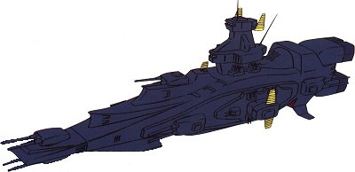
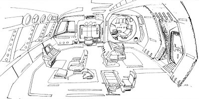

| Magellan Earth Federation Space Force Standard Battleship |
|
|  | |
General and Technical Data |
|
|
Unit type: space-use standard battleship Operator: Earth Federation Dimensions: overall length 327 meters; overall width 102 meters; overall height 96 meters Weight: 62900 tons Construction: titanium alloy Propulsion: 4 x rocket engine Equipment and design features: Salamis re-entry capsule Hangar capacity: 2x infantry Launch catapults: 0 Fixed armaments: 5x fore 2-barrel mega particle cannon turret, 2x aft 2-barrel mega particle cannon turret; 14 x 2-barrel 105mm antiaircraft machinegun turret; 4 x large rocket launcher |
|
| Technical and Historical Notes | |
|
Developed under the Earth Federation's "70's Rearmament Program" the Magellan-class battleship forms half of the EFSF's navy along with the Salamis-class cruiser. While the Salamis is intended to be a multirole ship capable of combat, reconnaissance, and interdiction, the Magellan is a flat out battlewagon. It serves no purpose other than to put down an extremely heavy field of fire from its multiple main turrets, and it does this quite well. Initial Federal doctrine was slated to have the Magellans serve as fleet flagships, but it was felt that this would be a gross misappropriation of the Magellan's massive firepower, and it wasn't long before the ratio of Salamis to Magellans was breaking two-to-one in many fleets.
The Magellan-class is armed with seven powerful double-barreled mega particle cannon turrets, five forward and two aft. A host of antiaircraft machineguns are stippled around its bridge, and four large missile launchers are mounted behind the first primary turret. Combined, these weapons give the Magellan a huge amount of firepower for a ship that's only about 40 meters longer than the Salamis. Magellans are propelled by four giant rocket engines, and have their own re-entry capsule, much as the Salamis does. They also sport much thicker armor and a reinforced hull, allowing them to take a lot more punishment than many would believe. Though the Salamis-class cruisers were sunk like paper cups at Lourm, the Magellans put up much more of a fight, and are credited with all Zeon warship losses at the battle. They were also no easy quarry for Zeon's Zaku mobile suits due to their hard-hitting antiaircraft complement, but that still wasn't enough to carry the battle at the time. When the new class of Salamis ships began production, it was decided that the Magellan could use one too. The Magellan's refit isn't as spectacular as the Salamis', though it does correct a few principle failings. The only noticiable difference is that the Magellan's antiaricraft machineguns have all been replaced with laser turrets, with an additional two mounted on the portruding gunnery stations. This significantly boosts the warship's capability to deal with mobile suits and other fast-moving enemy targets. No other major changes have been made due to the Magellan's already-accomplished track record. Much as with the Salamis, EF strategists plan to have every original Magellan refitted to the newer model by the end of the year. A second Magellan refit, the Magellan II, is designed to operate as a theatre flagship until the monstrous Birmingham class can be completed. Sporting a bulkier, more armored frontal hull, the Magellan II carries an additional two heavy MPC turrets, and an additional set of four forward facing missile tubes. An enlarged radar pylon is also attached to the rear of the bridge, enhancing communicative ability in minovski particle conditions.
Further, due to constraints on the Federation's limited amounts of Pegasus-class assault carriers, some Magellan-class ships are refitted to carry mobile suits. This is done via the removal of the top fore mega particle cannon and adding a magnetic landing rack, capable of seating four GM-type mobile suits or six Balls. Currently, this upgrade is only available on the older-model Salamis.
|
| Weapons and Features | |
|
Improved model Magellan "Revised" in white colorscheme  RPG quick stats sheet RPG quick stats sheet
Armor Rating: 3.1 Speed Rating: .3 Maneuverability Rating: .3 Sensors Rating: 2.2 MPC Power Rating: 3.7 Flagship model Magellan II RPG quick stats sheet
Armor Rating: 3.2 Speed Rating: .3 Maneuverability Rating: .2 Sensors Rating: 2.5 MPC Power Rating: 3.6 Magellan Kai RPG quick stats sheet
Armor Rating: 3.1 Speed Rating: .3 Maneuverability Rating: .3 Sensors Rating: 2.1 MPC Power Rating: 3.6

|
|